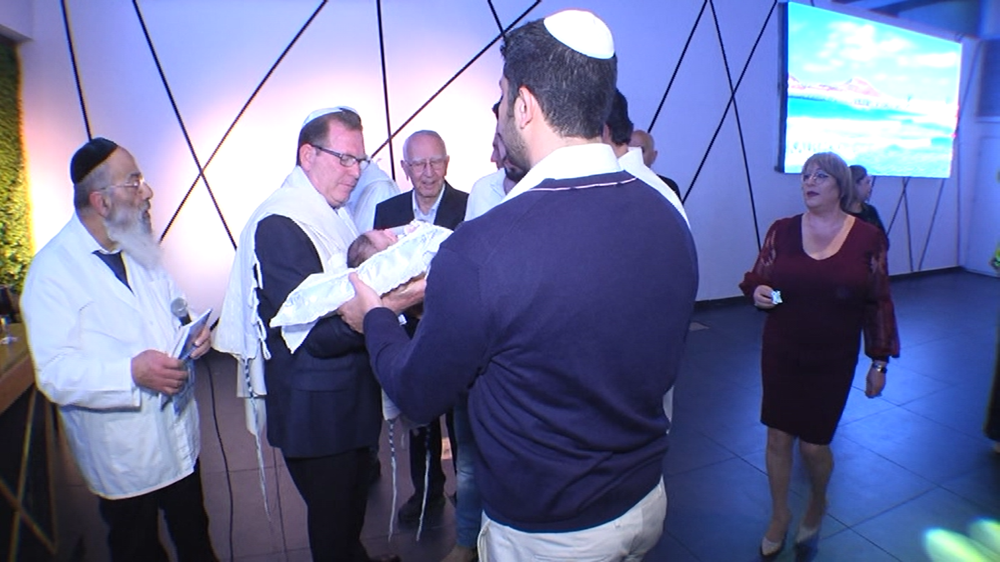
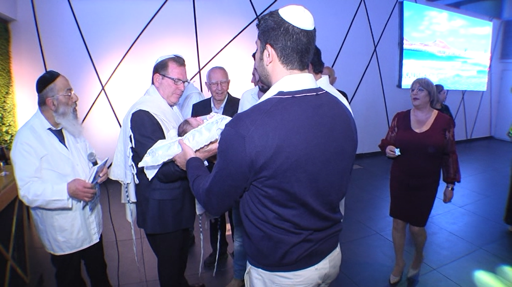

לידה בוכרית
לא נורא, זה יסתדר כשיגדל
מטרת האירוע
האירוע הוא מצווה על פי התורה והוא חלק משתי
מצוות העשה.()
מצוות העשה: מכלול המצוות בתורה שציוויון "קום ועשה".
האב חייב למול את בנו
מקור המצווה - מהתנ"ך.
אלוהים מצווה על אברהם לבצע ברית מילה לכל זכר בן שמונה ימים.
מה לובשים
חתני השמחה ילבשו בגדים בוכריים מסורתיים הנהוגים כמנהג מסורתי.
בתרבות הבוכרית לובשים בגדים אלו רק באירועים חשובים ומיוחדים.
מהאורחים כמובן לא מצפים להגיע מסורתיים, לכן תרגישו בנוח לבוא בבגדיכם החגיגיים "הרגילים".

כדאי לדעת...
ג'ומא - גלימה ארוכה ממשי אשר באמרותיה רקומים בחוטי זהב צורות מיוחדות.
הקלפוש הוא כובע רקום בחוטים צבעוניים וחוטי זהב, שחובשים במקום כיפה.
האשה לובשת קורטה, קלפוש, נומול ועונדת לראשה שרשרת פנינים וזהב הנקראת פרכונה- שרשרת פנינים, אשר האישה עונדת על מצחה
הקורטה היא שמלה רחבה העשויה מבדי אורגנזה ומבדי משי שעליהן רקמת קטיפה שזורה בחוטי זהב.
נומול - צעיף מאורגנזה בצורת משולש אשר עליו רקומים חרוזים ופייטים מזהב וכסף. הנומול מכסה את הכובע.
איזה מתנה להביא
מומלץ להביא מתנה שתשמח את ההורים לגידול התינוק
לדוגמא ...
- צעצועים
- בגדים (גדל מהר התינוק)
- אביזרים למטבח (כלים, סינרים)
- אביזרים לחדר שינה (מצעים,בובות, כריות)
 

מהלך האירוע
- תינוק מובל לבמה ע"י שושבינים.
האורחים צריכים לעמוד לכבוד המאורע -
המוהל לוקח את התינוק ומניח אותו על הסנדק היושב על
כיסא אליהו
()
כסא אליהו: כסא מיוחד אותו מכינים לעריכת ברית מילה.
- לפני תחילת הברית שרים פיוט מיוחד "ברוכים אתם קהל אמוני, וברוך הבא בשם ה'"
- הסנדק מניח את התינוק על הברכיים ומתבצעת הברית על ידי המוהל (המוהל פשוט חותך שם למטה)
- התינוק כנראה יבכה, כדי להרגיע אותו יביאו לו למצוץ אצבע שלעיתים יהיה עם מעט יין שיעזור לו להתאושש
- האבא שותה מהיין ומברך עליו
- "ויקרא שמו בישראל" - המוהל מכריז את שמו של התינוק
כדאי לדעת
את הילד מלבישים בחליפת הג'ומא ובמהלך הטקס מניחים אותו על כרית מעוטרת בעבודת יד
בריתה
כמובן שלא נשכח את הבנות
גם להן יש אירוע מיוחד, "בריתה", הנערך סמוך ללידה
נערכת סעודה גדולה לכבוד הולדת בת המשפחה.
בסעודה מכריזים מהו שמה.
גם לאירוע זה נהוג להביא מתנה, בדיוק כמו לברית (ראו מעלה)

כדאי לדעת
זבד הבת בתורה: "ותאמר לאה: זבדני אלוהים אותי זבד טוב"
פירוש המילה "זבד" היא מתנה.
על פי הפרשנים לאה השתמשה במונח זה לאחר לידת הבן השישי, זבולון. יש מפרשים אשר אומרים שבלידה זו הגיע אחותו התאומה דינה.
המילה "זבד" מופיע בתורה אך ורק בפסוק זה המתייחס ללידתה של דינה, לכן הפרשנים טוענים שאין ספק שהוא מכוון ל-"שמחת הבת" או כי שאנו נוהגים לומר - בריתה.